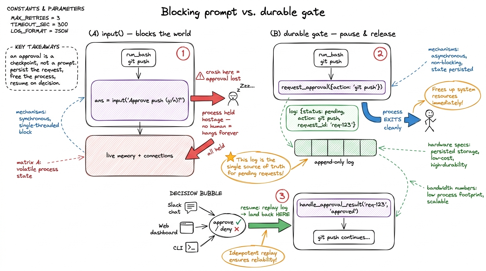
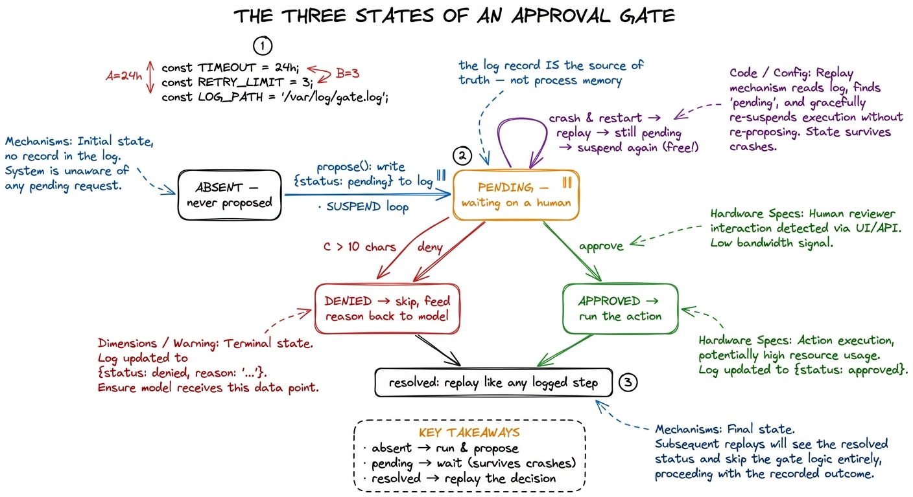
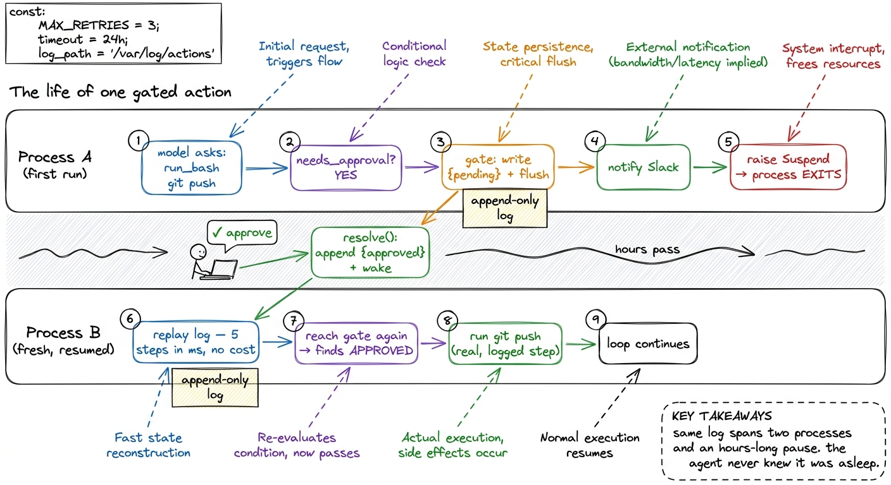
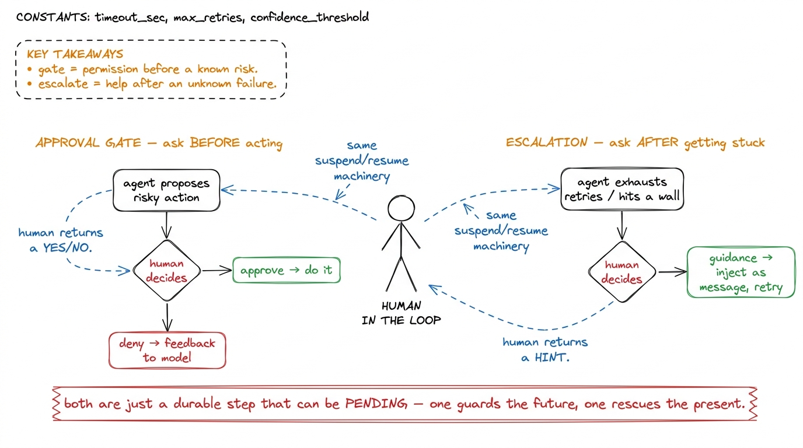

Human-in-the-loop: plans, approvals, escalation BUILD
By now your harness can do frightening things unattended. It can edit files, run shell commands, push to git, and — after durable execution and self-healing loops — it can do them across crashes and flaky APIs without your hand on the wheel. That is exactly the power we wanted, and exactly the power that should make you nervous. Some actions are cheap to undo and fine to automate. Others — deleting a branch, deploying to production, emailing a customer, running a migration — are the kind you want a human to look at first. This chapter is about building that pause: an approval gate that stops the durable loop cold, surfaces the proposed action to a person, and resumes only when they say yes.
This is the capstone of Day 4, and it is where the two systems we built this section finally click together. Durability taught the loop to survive a crash by treating every step as a logged, replayable event. Orchestration taught a supervisor to dispatch work to sub-agents. A human-in-the-loop gate is what happens when you realize that waiting for a person is just another kind of durability: the loop has to survive not a crash, but a coffee break — possibly a long one — and come back exactly where it was.
Why "just prompt the user" isn't enough
The naive version is a one-liner. Before the dangerous tool runs, print the command and call input():
if is_dangerous(cmd):
ans = input(f"Run `{cmd}`? [y/N] ")
if ans.lower() != "y":
return "denied by user"This works right up until you remember what the loop is now. The agent is a durable, replayable process, and it might be running headless — in CI, on a server, triggered by a webhook — with no terminal attached and no human standing by. A blocking input() assumes a synchronous human at your keyboard, which is the one assumption a real harness can't make.1 This is why Claude Code has both an interactive TUI and a headless -p mode, and why "approval mode" is a first-class setting rather than a prompt. The gate has to work when nobody is watching the terminal — the decision might arrive from a Slack button, a web dashboard, or a teammate three time zones away. Worse: input() blocks the whole process. If the human takes an hour, your process holds an hour of memory, connections, and state, and if it crashes while waiting, the pending approval evaporates.
So the real requirement isn't "ask the user." It's this: pause the durable loop, persist that we are waiting on a specific proposed action, release the process entirely, and resume — possibly in a fresh process, possibly much later — the instant a decision arrives. The approval isn't a prompt. It's a checkpoint.

figure rendering · A blocking prompt holds the whole process hostage and loses the approvThe mental model: a gate is a step that can suspend
Recall from durable execution that every model call and every tool call is a step funneled through run_step, which either executes-and-logs or returns-from-log. An approval gate is one more kind of step — but a special one, because it has a third outcome besides "done" and "replay." It can be pending.
A normal step has two states in the log: absent (run it now) or present-with-result (replay it). An approval gate needs three:
- absent — we haven't proposed this action yet. Propose it: write a
pendingrecord to the log and suspend the loop. - pending — we proposed it but no decision has landed. Stay suspended; there is nothing to do but wait.
- resolved (approved or denied) — a human answered. Replay that decision like any other logged result and continue.
That third state is the whole trick. Suspension isn't a crash and it isn't completion — it's a deliberate, durable "come back later." Because the pending record lives in the same append-only log as everything else, a crash while suspended costs nothing: on restart we replay the log, hit the still-pending gate, and suspend again. The human's eventual "yes" appends approved and lets replay sail past it.

figure rendering · An approval gate is a three-state step: absent (propose and suspend),Building the gate
Let me build it in the shape of the durability layer from the last chapter, so it drops straight into the loop we already have. First, a tiny classifier for which actions even need a gate — most don't, and gating everything would make the agent useless.
DANGEROUS = ("git push", "rm ", "deploy", "drop table", "curl -X POST", "migrate")
def needs_approval(tool_name, args):
if tool_name == "write_file":
return False # cheap to undo; let it run
if tool_name == "run_bash":
cmd = args.get("cmd", "")
return any(d in cmd for d in DANGEROUS)
return FalseThis is deliberately crude — a substring blocklist. Real harnesses layer this with the permission modes from Layer 2 (an allowlist the user can extend, a "yolo mode" that skips gates, a per-project settings.json).2 Claude Code's permission system is exactly this idea grown up: allow/ask/deny rules matched against tool calls, plus modes like acceptEdits and bypassPermissions. The gate we build here is the durable mechanism underneath those policies — the policy decides whether to ask, the gate decides how to wait for the answer. Here we keep the policy dumb so the waiting mechanism stays in focus.
Now the gate itself. It reads and writes the same EventLog as every other step, keyed by a stable step_id.
class Suspend(Exception):
"""Raised to unwind the loop cleanly when we're waiting on a human."""
def __init__(self, request_id):
self.request_id = request_id
def approval_gate(log, step_id, action_desc):
rec = log.find(step_id) # look for an existing decision
if rec is None: # ABSENT → propose + suspend
log.append({
"step_id": step_id,
"kind": "approval",
"status": "pending",
"action": action_desc,
"requested_at": now(),
})
log.flush() # durable BEFORE we release
notify_humans(step_id, action_desc) # Slack / dashboard / email
raise Suspend(step_id) # unwind — free the process
if rec["status"] == "pending": # PENDING → still waiting
raise Suspend(step_id) # replay landed us here; re-suspend
return rec["status"] == "approved" # RESOLVED → True/False, continueThree branches, one per state. Notice the ordering echoes the idempotency lesson from durability: we flush() the pending record to disk before we notify anyone or release the process, so the request can never be lost in the gap. Notice too that we don't call input() — we raise Suspend, which unwinds the loop entirely. The process is free to exit. Whatever's driving the harness (a job runner, a server) catches Suspend at the top, records "run X is parked on approval Y," and moves on to other work.
The decision arrives out-of-band. A human clicks approve in a dashboard, which calls one function:
def resolve(log, step_id, approved, reviewer):
log.append({
"step_id": step_id,
"kind": "approval",
"status": "approved" if approved else "denied",
"reviewer": reviewer,
"decided_at": now(),
})
log.flush()
wake_run(log.run_id) # re-enqueue the suspended run to resumeBecause the log is append-only, we don't mutate the pending record — we append the resolution and let log.find return the latest record for that step_id. Same discipline as everywhere else: one durable artifact, only ever grown, never edited.
Wiring it into the loop
Here is the durable loop from the last chapter, now with a gate in front of side-effecting tools. The change is small — that's the point.
def run_agent(log, user_request):
messages = rebuild_messages(log) or [{"role": "user", "content": user_request}]
turn = start_turn(log)
while True:
reply = run_step(log, f"model:{turn}",
lambda: call_model(messages, TOOLS))
messages.append({"role": "assistant", "content": reply["content"]})
if reply["stop_reason"] != "tool_use":
return text_of(reply)
results = []
for i, block in enumerate(tool_uses(reply)):
gate_id = f"gate:{turn}:{i}:{block['id']}"
if needs_approval(block["name"], block["input"]):
if not approval_gate(log, gate_id, describe(block)):
# denied — don't run it, tell the model why
results.append(denied_result(block, "human declined this action"))
continue
out = run_step(log, f"tool:{turn}:{i}:{block['id']}",
lambda: run_tool(block["name"], block["input"]))
results.append(tool_result(block, out))
messages.append({"role": "user", "content": results})
turn += 1Trace the full life of one gated action. The model asks to run_bash("git push"). needs_approval returns True, so we call approval_gate. First time through, the gate finds no record, writes pending, notifies a human, and raises Suspend — the loop unwinds, the process exits, the run is parked. Hours later a reviewer approves; resolve appends approved and wakes the run. A fresh process rebuilds messages by replaying the log and re-runs the loop. Every prior run_step replays from cache in milliseconds — no re-billing, no re-running the tests. It reaches the gate again; this time approval_gate finds approved and returns True. The git push finally runs, as its own logged step, and the loop continues as if nothing had paused.

figure rendering · One gated action across two processes: the first proposes, logs, and sDeny is not the end — it's feedback
A subtle but important choice sits in that loop: when the human denies, we don't crash the run and we don't silently drop the action. We feed a tool_result back to the model saying the action was declined. That turns denial into a conversational signal. A good agent, told "the human declined git push," will adapt — ask why, propose a smaller step, or explain what it was trying to accomplish and let the human redirect it.3 This is the difference between a gate that blocks an agent and a gate that steers it. The denial message is a great place to include the reviewer's note ("not until CI is green") so the model can act on the actual reason rather than just retrying the same thing and getting denied again. Denial isn't punishment; it's the human editing the plan mid-flight, which is the entire reason a human is in the loop.
Escalation: gate before the act, and escalate after the fail
Approval gates handle the actions you can anticipate. But durable agents also hit situations nobody can pre-classify — a migration that half-applied, a test suite that's been red for twenty minutes, a self-heal loop that has retried the same 500 five times. For those you want the mirror image of an approval gate: escalation. Where a gate pauses before a risky action to ask permission, escalation pauses after the agent decides it's stuck, to ask for help.
Mechanically it's the same suspend-and-resume machinery, triggered from a different place. When the self-healing loop exhausts its retries, or a step blows a budget, or the agent's confidence check fails, it raises the same Suspend — but the pending record carries the context of the failure instead of a proposed action, and the human's "resume" carries a hint back into the loop.
def escalate(log, step_id, reason, context):
rec = log.find(step_id)
if rec is None:
log.append({"step_id": step_id, "kind": "escalation",
"status": "open", "reason": reason, "context": context})
log.flush()
notify_humans(step_id, f"AGENT STUCK: {reason}", context)
raise Suspend(step_id)
if rec["status"] == "open":
raise Suspend(step_id)
return rec["guidance"] # human's hint, fed back into the loopThe difference from a gate is what flows back: a gate returns a boolean, an escalation returns guidance — a string the loop injects as a user message so the model can try again with human insight it couldn't derive on its own. This is how you get an agent that runs long and unattended but still knows how to stop and ask instead of thrashing forever or, worse, guessing.

figure rendering · Approval gates and escalation are the same durable-suspend mechanism pThe capstone: a checkpointed dispatcher with an approval gate
Step back and look at what Day 4 assembled. The durable dispatcher gives you a loop where every step is logged and replayable. Self-healing lets that loop survive its own transient errors. Sub-agents let a supervisor fan work out to child runs. And now the approval gate and escalation give the human a seat inside that machinery — not bolted on as a blocking prompt, but woven in as a durable step that can suspend and resume like any other.
The synthesis fits in one sentence: a human-in-the-loop harness is a checkpointed dispatcher in which some steps are permitted to pend on a human, and the human's decision is just another logged event that replay carries forward. The same EventLog that survives a crash survives a coffee break; the same replay that recovers a dead process resumes from an approval. You didn't build a separate "approval system" — you noticed a human's judgment is one more thing worth checkpointing, and spent it through machinery you already had.
That's the durable, orchestrated, human-supervised harness. It acts on its own when it's safe, waits for you when it isn't, and asks for help when it's lost — without ever holding a process hostage or losing its place. From here the remaining question isn't how the harness runs, but how you watch it run: observability, tracing, and evals. That's the next section.